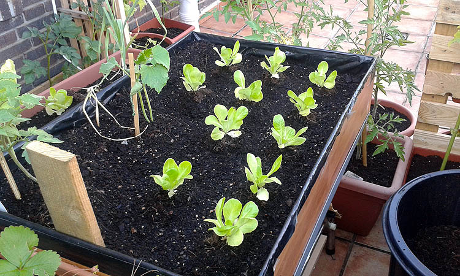

FRESCA BIENVENIDA PARA TI A ÉSTA PÁGINA, ECONTRARÁS LO QUE NECESITAS ACERCA DE HUERTOS.
TEMAS |
ACERCA DE CULTIVOS DE UN HUERTO |
HUERTO PARA HACER EN CASA Y HERRAMIENTAS A USAR |
CONSEJOS Y NUTRICIÓN PARA NUESTRO HUERTO |
ACERCA DE LA PÁGINA
Ésta es una página para aquellas personas que se les introdujo la curiosidad por crear su propio huerto o que van a iniciar su negocio. Aquí podrás encontrar toda la información necesaria para crear uno de manera efectiva, sin que se sequen y perezcan. Así que, manos a la obra. Suerte.
ACERCA DE CULTIVOS DE UN HUERTO
¿Qué plantas cultivar en el huerto? Hay muchas plantas que puedes poner en la huerta, desde hortícolas típicas, hasta plantas aromáticas beneficiosas, abonos verdes, flores, setos y otras plantas beneficiosas en el huerto.
Si tienes claro las plantas que vas a cultivar, lo siguiente para hacer la huerta casera es decidir dónde y cómo irán colocados los cultivos que hemos elegido.
Hay muchos tipos de huertos: las plantas pueden estar en bancales elevados o directamente en el suelo. También podemos elegir recipientes de cultivo o contenedores y cultivar un huerto en macetas o macetohuerto, un huerto en mesas de cultivo o incluso huertos verticales.
Deberás elegir el tipo de huerto más adecuado en función del espacio y de las plantas elegidas.
Es muy importante planificar bien la colocación de las plantas del huerto en los recipientes o bancales.
Debes aprovechar todas las ventajas de las asociaciones de cultivos beneficiosas y alternar los cultivos con respecto al año anterior, según la técnica de la rotación de cultivos.
Otra de las cosas a decidir a la hora de hacer una huerta casera es el sistema de riego. Hay varios tipos o sistemas de riego en el huerto: riego por surcos, riego por goteo, aspersores, cinta exudante...
Deberás elegir el sistema que mejor se adapte a tus necesidades teniendo en cuenta el espacio del que dispones y buscando siempre el máximo ahorro de agua.
HUERTO PARA HACER EN CASA
1.DECIDIR QUÉ TIPO DE HUERTO
Si tienes un jardín puedes instalar tu huerto directamente en el suelo o en bancales elevados como éstos:
Si no tienes tanto espacio o prefieres no agacharte para las labores del huerto, puedes poner mesas de cultivo en la terraza o en la azotea, o incluso instalar un huerto en el patio, un macetohuerto en las ventanas o en cualquier otro lugar… 2.ESCOGER LO QUE QUEREMOS SEMBRAR Hay muchas posibilidades, no sólo las típicas hortalizas y verduras. De hecho, si incluyes en tu huerto flores, aromáticas, setos de frutos rojos o incluso abonos verdes, podrás tener muchos beneficios, como el control de plagas y enfermedades.A la hora de elegir, además de pensar en nuestros gustos, puede ser inteligente pensar en plantas menos comunes en el mercado (y por tanto mÁs caras). 3.PLANIFICACIÓN DEL RIEGO
Es muy importante planificar el riego en el huerto. Esto es, por ejemplo, colocar las plantas en función del agua que necesitan, agrupando las que necesitan más riego y las que necesitan menos. Eso en el caso de que tengamos un riego automático, ya que si es un riego manual regaremos nosotros mismos en función de las necesidades de cada uno.
4.DECIDIR LA COLOCACIÓN DE LOS CULTIVOS
Una de las claves de cómo hacer una huerta bien es elegir de forma adecuada la colocación de los cultivos. Para ello, hay que tener en cuenta varias cosas, como la distancia correcta entre plantas, o la existencia de compatibilidades e incompatibilidades entre las distintas especies.
5.PREPARAR EL TERRENO, SUSTRATO Y ABONO
Si vas a montar la huerta directamente en el suelo es muy importante arar o remover la tierra con un azadón o, de forma más superficial, con un rastrillo antes de implantar los cultivos.
Esto se hace para eliminar las malas hierbas y esponjar la tierra. Si, por el contrario, tienes el huerto en macetas o mesas de cultivo, deberás comprar sustrato para los recipientes.También hay que fertilizar para que las plantas tengan los nutrientes necesarios y que puedan crecer bien y dar buenas cosechas.

6.SIEMBRA Y PLANTACIÓN
Normalmente, sobre todo para aquellos que se están iniciando en el cultivo del huerto, es mejor hacer primero unos semilleros o planteles en lugar de sembrar directamente en la tierra definitiva.
De esta forma germinarán más fácilmente las semillas y podremos controlar y cuidar mejor cada plantita.
7.PREVENCIÓN DE PLAGAS Y ENFERMEDADES
Este es un aspecto esencial para el éxito de los cultivos. Si quieres un huerto ecológico libre de sustancias artificiales, lo más importante es prevenir las plagas y enfermedades para evitar el uso de insecticidas y fungicidas químicos.
Para ello, puedes usar bioestimulantes para unas plantas más sanas y fuertes, acolchados o mulching para el huerto o cultivar junto a las hortalizas plantas que, con su olor, repelen plagas y enfermedades, como la albahaca, los tagetes y otras plantas con flores.
8.ASÍ COMO NACEN HUERTOS NACEN LABORES
Escardar los cultivos es una labor muy beneficiosa para la mayoría de las hortalizas y verduras del huerto. La escarda consiste en remover la tierra con un rastrillo o azadón pequeño. Para algunas labores de cultivo como ésta hay herramientas básicas que no pueden faltar en tu huerto.Otra labor que se recomienda en algunas especies de hortícolas es la poda, y por último la cosecha.
CONSEJOS Y NUTRICIÓN PARA NUESTRO HUERTO
Son 6 consejos para mantenerte alejado de errores u olvidos comunes que normalmente hacen que tu huerta fracase, si prestas atención a estos 6 puntos tendrás una huerta de ensueño y alimento de calidad garantizado. CONSEJOS PLANTAS POCAS COSAS Y LAS QUE TE GUSTE COMER Sobre todo cuando comenzamos, cometemos el error de plantar cuanto semilla caiga en nuestras manos, el primer año hay que centrarse en plantar 2 o 3 cosas y de ahí en más ir creciendo de a poco, y siempre plantar cosas que nos guste comer esto es fundamental. PLANTAR CADA COSA A SU DEBIDO TIEMPO Seguir el calendario es importante, si plantamos demasiado pronto podemos tener problemas por ejemplo con las heladas si plantamos muy tarde puede que no lleguemos a cosechar, siempre conseguir un calendario acorde con el lugar en donde vivimos y preguntar a las personas que llevan tiempo cultivando en la zona es fundamental para saber cuando plantar cada cosa. TENER CUIDADO CON EL RIEGO Nunca encharcar la tierra, no hay que regar de más ni tampoco de menos, regar a última hora de la tarde o a primera hora del día para que el agua no se evapore rápidamente y le demos tiempo al suelo de absorberla. Los días nublados o fríos no regar. ABONO ORGÁNICO Es sumamente que utilicemos y hagamos nuestro abono orgánico, compost, lombricompost, purines de estiércol el que nos resulte más simple para nuestro caso pero hay que abonar para mantener el suelo fértil. MANEJO DE PLAGAS Mantener la plagas a raya pero sin estresarte, si hay plantas sanas no hay plagas vigilar si no estamos teniendo un problema de abono o riego, que debilita la planta, utilizar trampas, plantas cebo, plantas aromáticas que alejan a insectos, buscar el mejor método según la plaga. PLANTAR LO QUE SE DA BIEN EN TU ZONA Hay plantas que crecen bien zonas cálidas y otras que no, hay plantas que gustan y necesitan del frío, etcétera, averigua con tus vecinos cuales son las plantas que crecen bien en la zona, planta las variedades locales que están adaptadas a tu clima y obtendrás buenos resultados. NUTRIENTES QUE NUESTRO HUERTO NECESITA Las plantas, sean hortícolas o no, necesitan una serie de minerales y otros elementos que captan de la tierra y el aire para poder desarrollarse convenientemente.
Si tuvieran un exceso o carencia de alguno de estos minerales y elementos las plantas nos lo dejarán saber mediante una serie de síntomas como por ejemplo manchas en las hojas, decaimiento de la planta, mayor presencia de plagas o enfermedades, etc..
BIBLIOGRAFÍA
ALGUNOS DE ESTOS ELEMENTOS IMPORTANTES QUE NECESITAN LAS PLANTAS SON:
NITRÓGENO:les da a las plantas la energía para que desarrollen el follaje y los frutos, es decir, producen frutas o verduras.
También es necesario para el proceso de desarrollo de la semilla.
POTASIO:favorece el desarrollo de las raíces, de hidratos de carbono, hace que las plantas sean más resistentes ante la
climatología adversa, las plagas o las enfermedades, aumenta el peso de los frutos y éstos son mÁs ricos en agua y azúcares.
FÓSFORO:es muy importante para la floración, fructificación y maduración de los frutos, aporta consistencia a las estructuras de la planta, participa en la
fotosíntesis y también influye en el número y calidad de las semillas que produzca la planta.
AZUFRE: participa en la formación de la clorofila y aporta enzimas y proteínas a la planta, además participa en el desarrollo del fruto.
CALCIO:influye en el desarrollo general de la planta y la dureza de los tejidos, favorece el desarrollo de las raíces, y en la formación y
desarrollo de los frutos.
MAGNESIO:es esencial para la producción de clorofila, además aporta resistencia a la planta ante las heladas y enfermedades.
https://www.bellota.com/agricultura/herramientas-huerto
https://ecocosas.com/agroecologia/10-consejos-para-que-tu-huerta-sea-un-exito-seguro/
https://www.ecoagricultor.com/79674/

© Derechos Reservados 2020 CultivandoFrescaVida.com Derechos de Contenido Reservados.